A TV tends to dominate a living room wall by default, mostly because it rarely gets treated as an actual design element. A little intention around it, color, texture, framing, lighting, can turn that dominant black rectangle into just one part of a considered wall, rather than the obvious focal point.
None of the ideas below require replacing the TV or the furniture around it. Most work with whatever's already in the room, just applied to the wall itself.

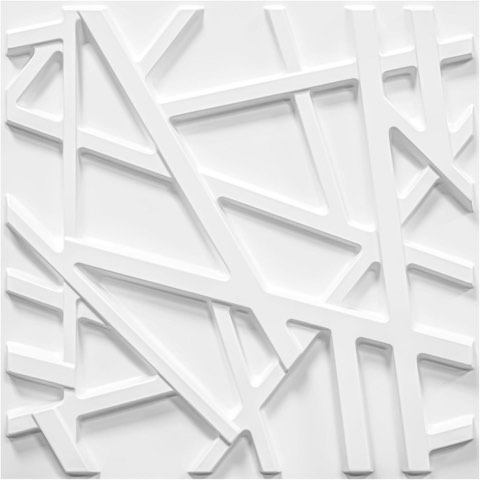
LEVOWAY 33 Pack 3D Wall Panels for Interior Wall Decor, 12 x 12 Inch, White Textured
Shop on Amazon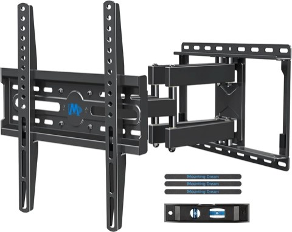
Mounting Dream Full Motion TV Wall Mount for 32-70 Inch TVs, up to 110 lbs
Shop on Amazon20 TV Wall Decor Ideas
1. Incorporate Lighting Around the Setup
Lighting brings instant ambiance to a TV wall beyond just backlighting the screen itself.
Wall sconces, LED strips, or picture lights placed around the setup tie the whole wall together into one cohesive, intentional display.
Dimmed sconces paired with backlit shelves during a movie creates a noticeably different feel than a single harsh overhead light ever could.
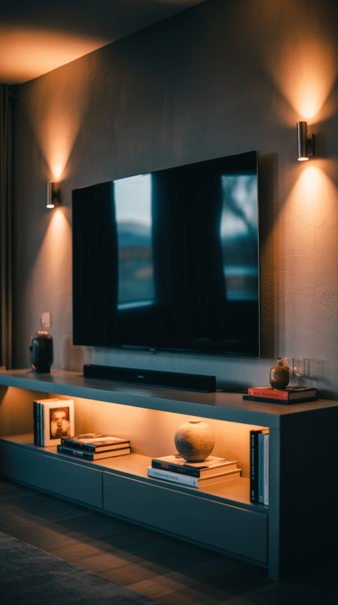
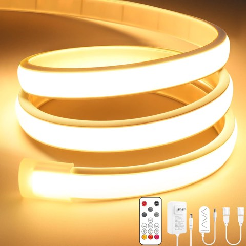
Lamomo COB LED Strip Lights Pro, 16.4 Ft, Warm White, Dimmable, Self-Adhesive
Shop on Amazon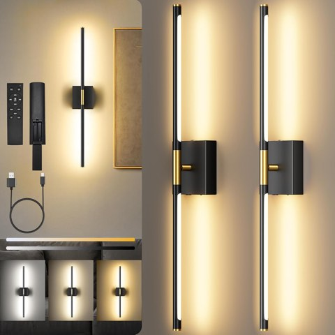
Battery Operated Wall Sconces Set of 2, Rechargeable, Black and Gold, 29 Inch
Shop on Amazon2. Use Art That Doubles as a Cover
For anyone who dislikes staring at a black screen when the TV's off, sliding artwork or a hinged frame can cover it entirely.
It shifts the room's overall feel from looking like an electronics display to something closer to a cozy gallery wall.
The art becomes the default view, with the TV only revealed when it's actually in use.
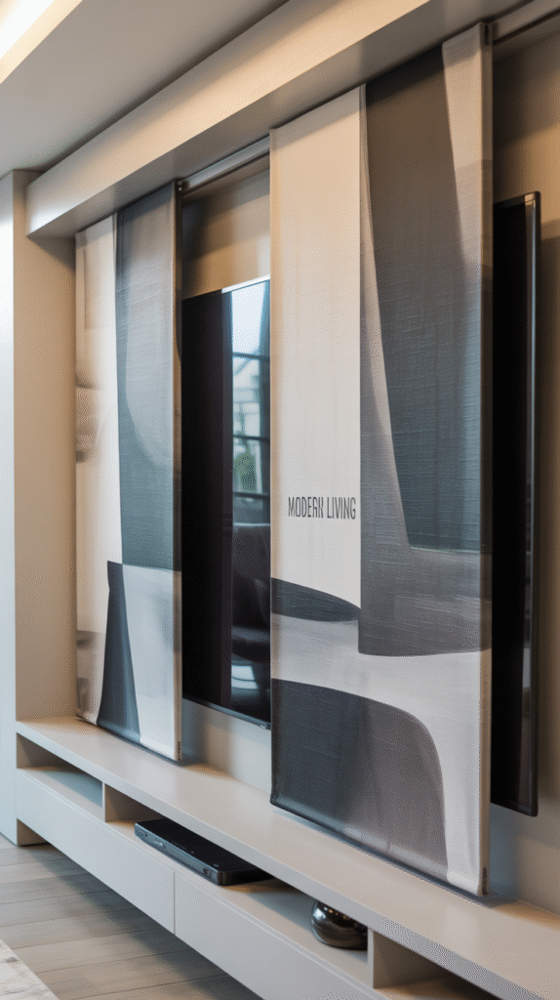
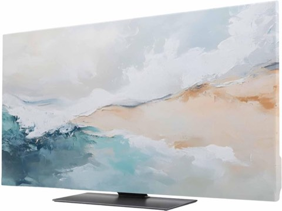
Elastic Stretch TV Cover, 75 Inch, Teal Beige Abstract Art Screen Dust Cover
Shop on Amazon3. Create a Niche or Recessed Wall
Building an actual recessed niche into the wall makes the TV feel genuinely built-in rather than simply mounted.
It's a bigger project than most ideas on this list, but the custom, intentional look it produces is hard to replicate any other way.
Even a modest DIY version of a recessed niche can read as a significant upgrade to the whole room.
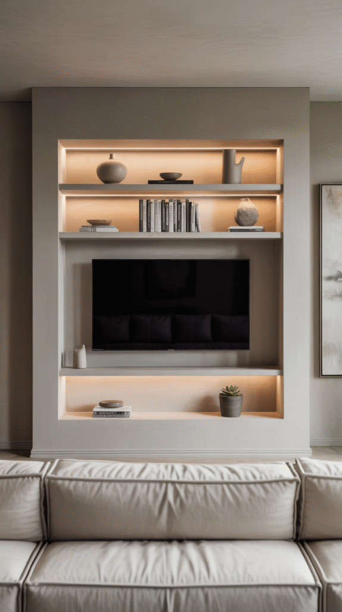
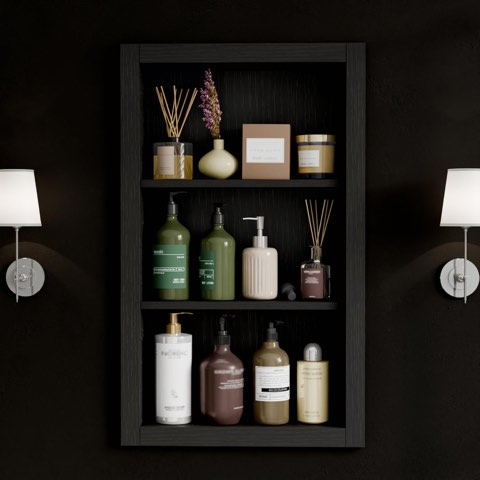
14 x 24 Inch Recessed Wall Niche, Wood Medicine Cabinet Without Mirror, 3-Tier
Shop on Amazon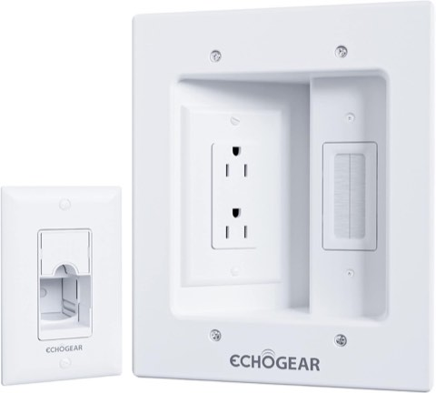
ECHOGEAR TV Cord Hider for Wall Mounted TV, Dual Outlet In-Wall Cable Management Kit
Shop on Amazon4. Go Industrial With Metal Accents
For a space that leans urban or edgy, metal shelving, pipe brackets, or iron sconces bring real industrial character to a TV wall.
The raw, slightly utilitarian material contrasts well against the smooth screen, giving the whole setup more visual texture.
It suits a loft-style living room particularly well, where exposed materials already play a role in the overall aesthetic.
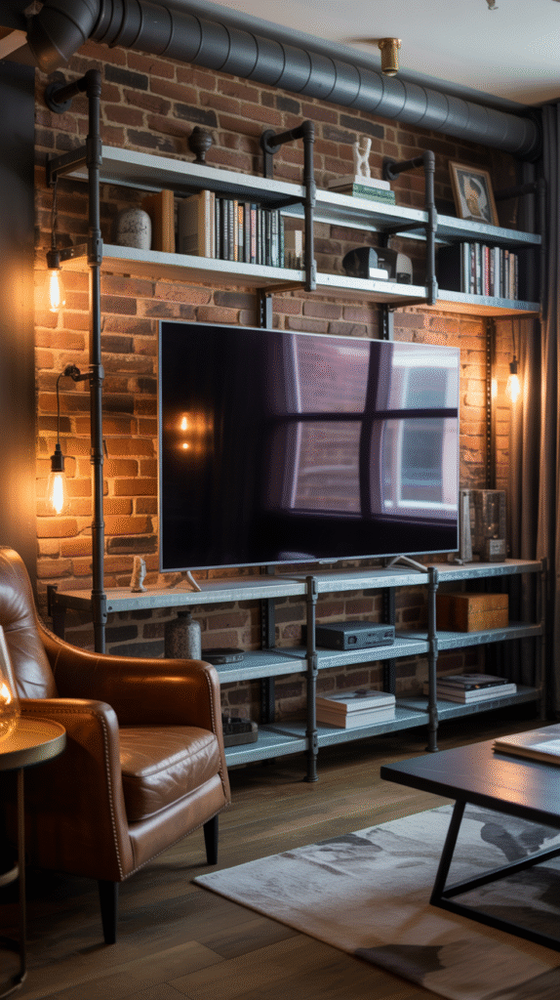
5. Frame With Plants
Plants improve almost any wall, and a TV setup is no exception.
A tall floor plant on one side or a few smaller potted plants on a nearby shelf soften the hard lines of the screen and any surrounding electronics.
Beyond the visual benefit, they add a bit of life and genuine air quality improvement to a space that otherwise leans heavily on technology.
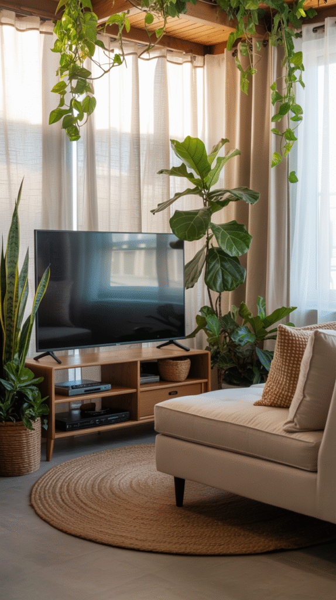
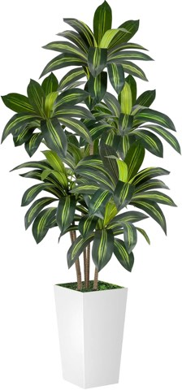
VIVATREES 6 Ft Artificial Dracaena Tree, 72 Inch Tall Faux Plant with White Planter
Shop on Amazon6. Use Wallpaper for a Statement
A plain TV wall gets an instant upgrade with the right wallpaper.
A subtler pattern tends to work best directly behind the screen, since anything too busy competes with whatever's actually playing on the TV.
Saving a bolder, more detailed pattern for the wall just beside or around the screen avoids that same issue while still making a statement.
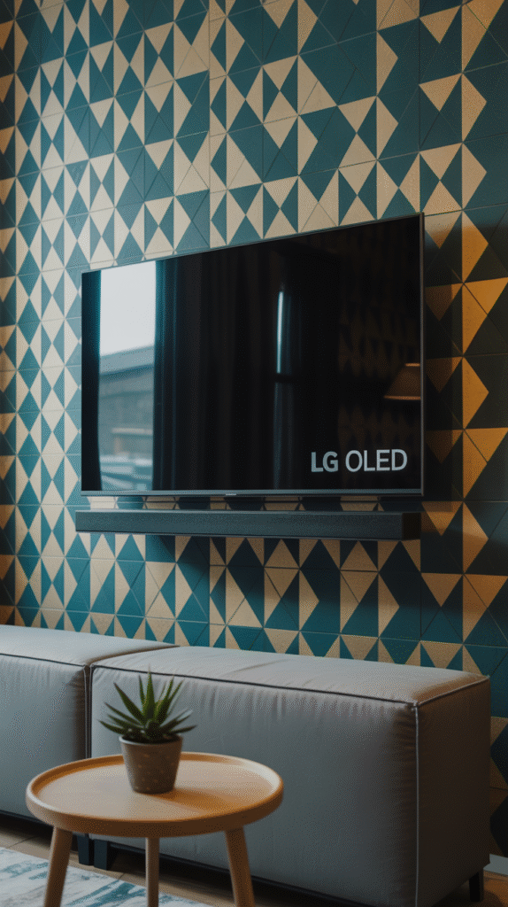
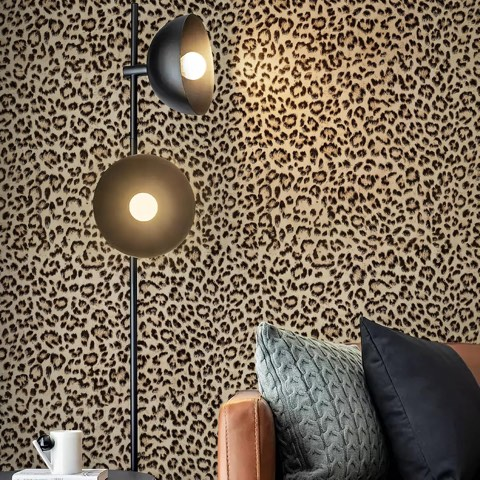
JiffDiff Leopard Print Peel and Stick Wallpaper, Removable, Self Adhesive, Textured
Shop on Amazon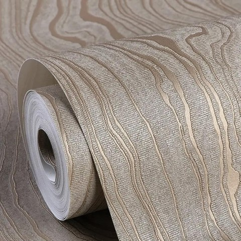
Gold Khaki Wood Grain Peel and Stick Wallpaper, 20.8 x 118 Inch, Removable
Shop on Amazon7. Try Dark Paint for Drama
A TV is, visually, just a large black rectangle, painting the wall around it a dark color lets the screen blend in rather than stand out when it's off.
It also makes movie nights feel noticeably more immersive, closer to an actual home theater than a living room with a screen on the wall.
The dark backdrop makes whatever's on screen feel like the clear focal point, without the surrounding wall competing for attention.
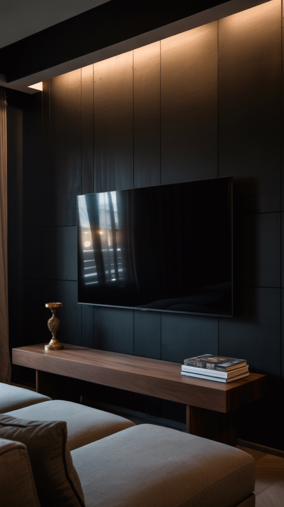


8. Add Picture Ledges
Picture ledges work like floating shelves, just shallower and sleeker, and they let art, books, or photos sit nearby without committing to a permanent nail hole.
They're an especially good fit for a rental, since the whole display can be rearranged or removed without any wall damage.
It's commitment-free styling that still adds real personality around the TV.
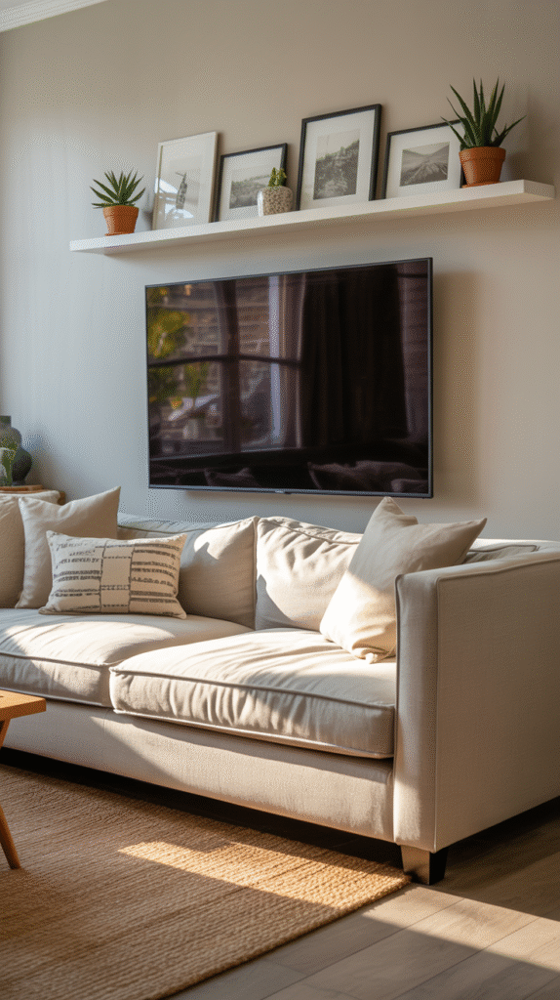
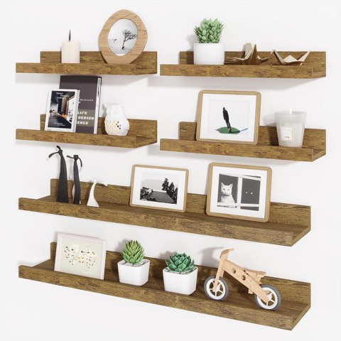
Picture Ledge Floating Shelves for Wall Decor, Brown, Set of 6, 24 Inch
Shop on Amazon9. Mount the TV Over a Fireplace
This is the classic move for a living room with an existing fireplace, the mantel practically asks for a TV above it.
Some design purists push back on this layout, but it solves a real space problem when floor plan options are limited.
It also tends to center the whole room around one clear focal wall, rather than splitting attention between two separate features.
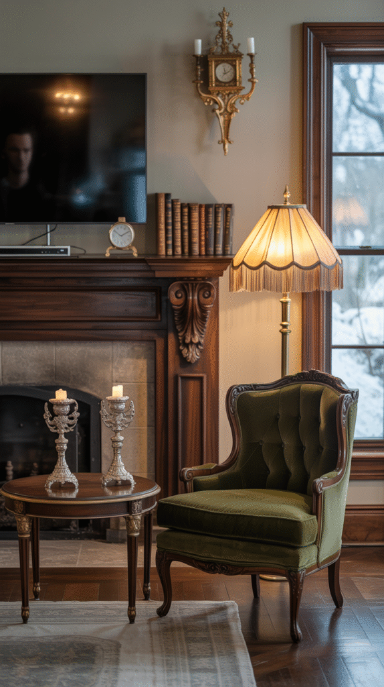
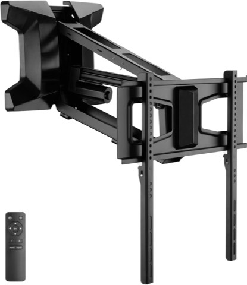
MOUNT-IT! Motorized Fireplace TV Wall Mount with Remote, Electric Pull Down Mantel Bracket
Shop on Amazon
10. Add Sculptural Wall Art
Framed art isn't the only option for the space around a TV, 3D wall sculptures, metal pieces, or wooden carvings add real dimension instead.
This works especially well when the TV is mounted slightly off-center or paired with a floating shelf, giving the sculptural piece its own clear space.
It brings texture and shadow into a wall that would otherwise stay completely flat.
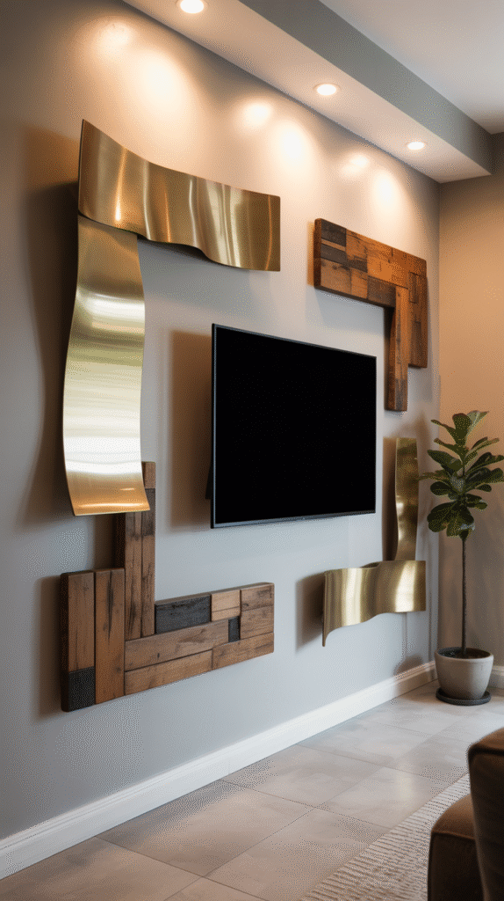

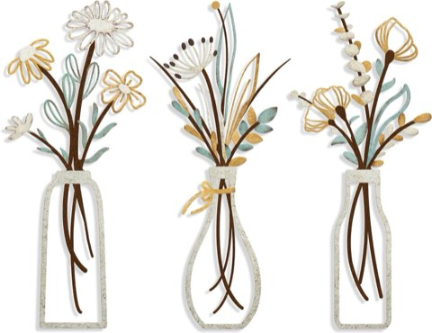
Pigort 3 Piece Metal Flowers Wall Art, Rustic Farmhouse Minimalist Decor
Shop on Amazon11. Try a Symmetrical Layout
Symmetry gives a TV setup a polished, intentional look without requiring much actual design effort.
Matching shelves, sconces, or art on either side of the screen creates a sense of order that's hard to achieve any other way.
It reads as crisp and classy, and it rarely looks dated the way a more trend-driven layout eventually can.
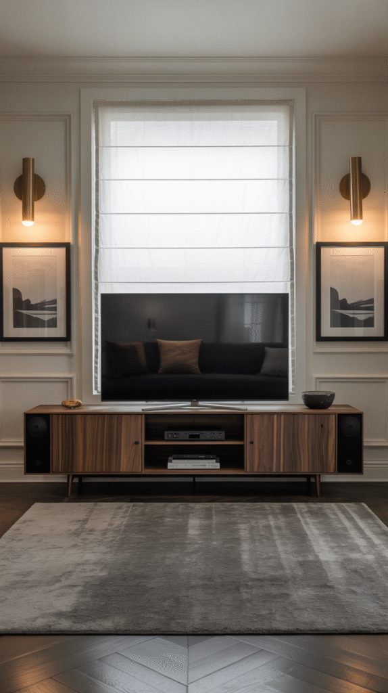
12. Layer in Natural Elements
Balancing all the technology on a TV wall with a bit of nature keeps the space from feeling purely electronic.
Wood, stone, rattan, or a few well-placed plants soften the hard edges of the screen and any surrounding hardware.
The contrast between natural texture and sleek technology tends to make both elements read as more intentional.
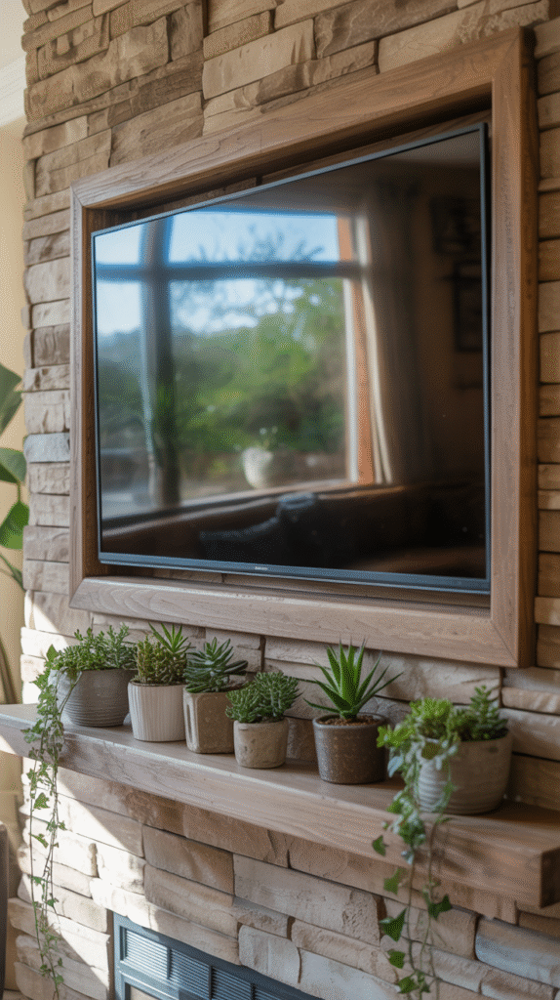
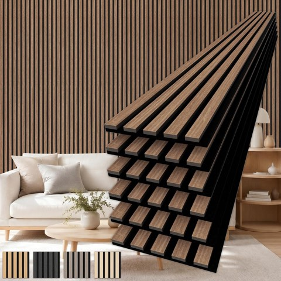
TONOR Wood Slat Acoustic Wall Panels, 6 Pack, 94.5 x 7.9 Inch, 30.96 Sq Ft
Shop on Amazon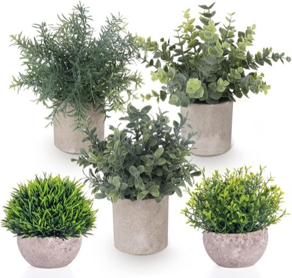
5 Pcs Small Artificial Greenery Eucalyptus Plants in Pots, Indoor Faux Plants
Shop on Amazon13. Add LED Backlighting
LED strip lights behind the TV bring an instant, theater-like mood to movie nights.
The subtle glow makes the whole setup feel more considered than it actually took to install, and it also reduces eye strain by softening the contrast between the screen and a dark room.
It's a small addition that changes the entire feel of watching something after dark.
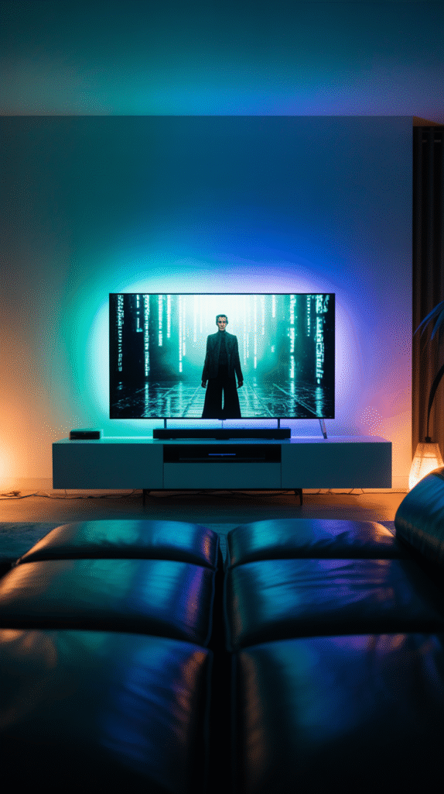
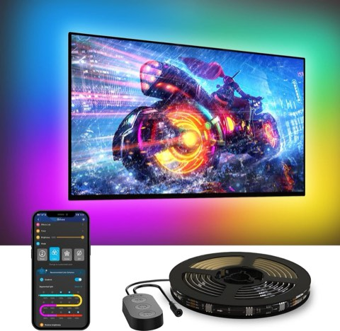
Govee TV LED Backlight, RGBIC Smart LED Strip Lights for 55-65 Inch TVs
Shop on Amazon14. Go Minimalist With a Clean Mount
Sometimes the strongest decor decision is doing less.
Mounting the TV and keeping the surrounding wall ultra-simple suits a modern, pared-back space especially well.
It's the right call for anyone who'd rather the room read as calm and uncluttered than heavily styled around the screen.
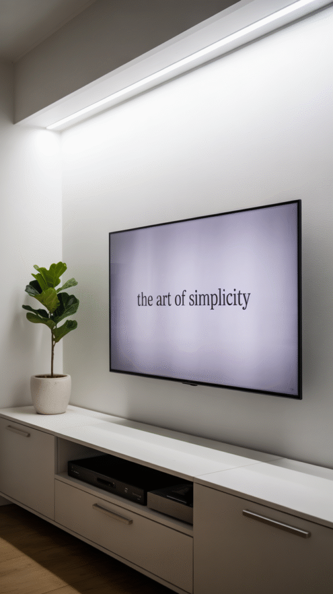
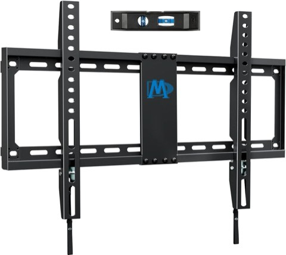
Mounting Dream Fixed TV Mount for 42-84 Inch Flat Screen TVs, UL Listed
Shop on Amazon15. Hang a Tapestry or Textile
A woven tapestry, macrame piece, or fabric panel makes an unexpected but effective backdrop for a TV.
It works especially well when the TV is mounted slightly higher or off to one side, giving the textile enough space to actually stand out rather than competing directly with the screen.
It's also one of the softer options on this list, bringing texture to a wall that would otherwise be dominated by a flat screen.
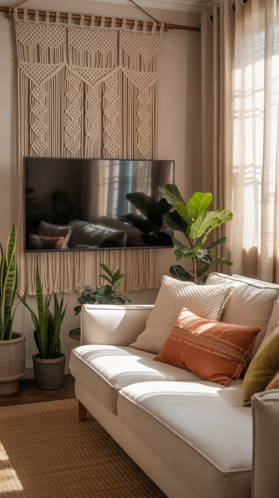
16. Incorporate Built-In Cabinets
For a genuinely polished, high-end setup, built-in cabinets flanking or surrounding the TV deliver both storage and visual intention.
They hold media equipment, books, or decor out of sight while making the whole wall feel like it was designed around the TV from the start, rather than added afterward.
It's a bigger investment than most ideas on this list, but the payoff in how finished the space feels is considerable.
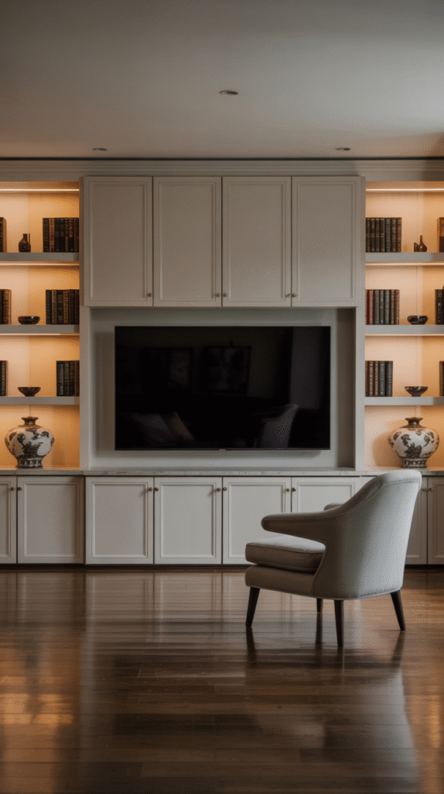
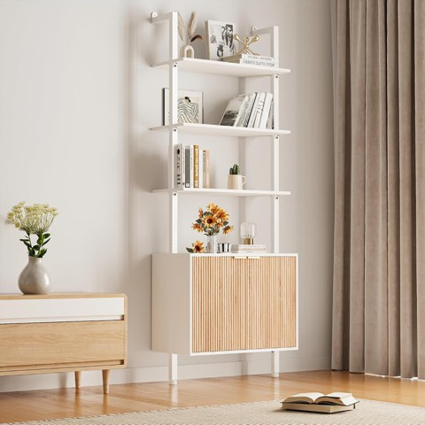
INNOD 74 Inch Tall Bookshelf with Storage Cabinet, Wood and Metal Frame
Shop on Amazon17. Add a Frame Around the TV
A TV rarely reads as charming décor on its own, but a custom frame mounted around the screen changes that.
It turns the TV into something closer to an actual piece of wall art, especially when the screen is off and the frame is what's left to look at.
Since the TV hangs there most of the day regardless, framing it is a small upgrade with a disproportionate visual payoff.
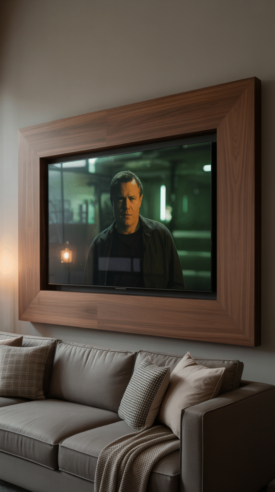
18. Mount Floating Shelves
Floating shelves bring a clean, modern frame to a TV without overwhelming the wall around it.
They work both functionally and visually, holding books, small decor, or a plant while giving the whole setup a more intentional, designed look.
The lack of visible brackets or legs keeps the wall feeling open rather than cluttered.
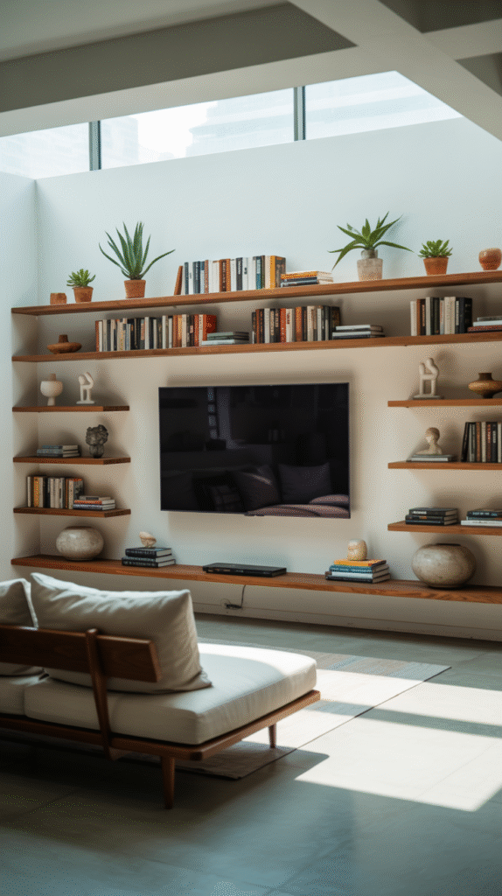
Vieshful Floating Shelves with LED Lights, 2 Pack, Pine Wood Wall Shelf
Shop on AmazonBrown Floating Shelves Set of 3, Easy Install, 15.7 Inch Wall Mount Shelf
Shop on Amazon19. Create a Gallery Wall Around the TV
Rather than letting the TV dominate the wall on its own, surrounding it with a mix of framed art, prints, and photos balances the visual weight.
Keeping heavier or darker frames toward the bottom of the arrangement helps the whole wall avoid feeling top-heavy.
The TV ends up reading as just one more framed element in the arrangement, rather than the obvious focal point.
upsimples Picture Frames Set of 10, Natural Wood Finish, Including 8x10, 5x7, 4x6
Shop on AmazonSONGMICS Gallery Wall Frame Set of 7, Black, Hanging or Tabletop Display
Shop on Amazon20. Use a Bold Accent Wall
Sometimes the strongest move isn't what goes around the TV, but what's directly behind it.
A bold accent wall, a deep charcoal, a moody green, even a textured plaster finish, makes the screen itself recede while elevating the whole wall's presence.
It's one of the few TV wall ideas that works regardless of what furniture is already in the room, since the wall color does most of the transformation on its own.
Livelynine Dark Botanical Peel and Stick Wallpaper, Moody Floral, 17.5 x 276 Inch
Shop on Amazon
Final Thoughts
None of these twenty ideas require a full renovation to make a real difference. A bold wall color, a few floating shelves, or even just better lighting around the setup can shift a TV wall from an afterthought into one of the room's actual design features.
The strongest approach usually combines just two or three of these ideas rather than all twenty at once, restraint tends to read as more intentional than an overly styled wall ever does.